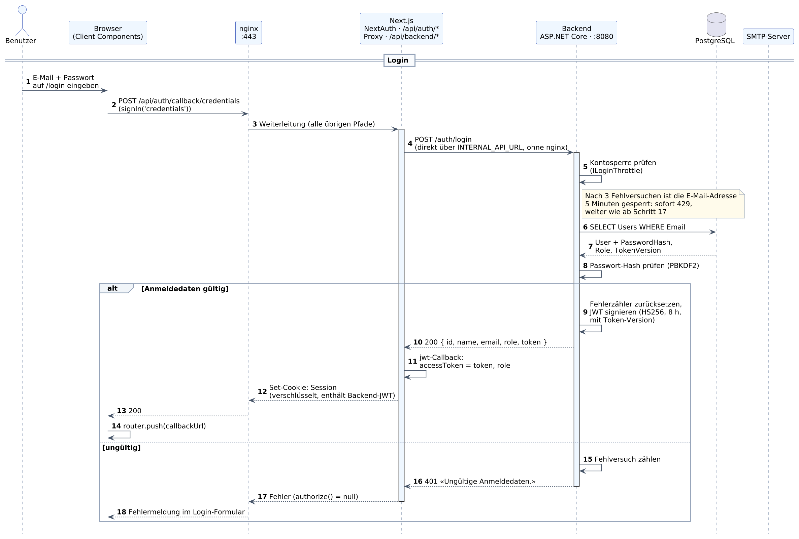
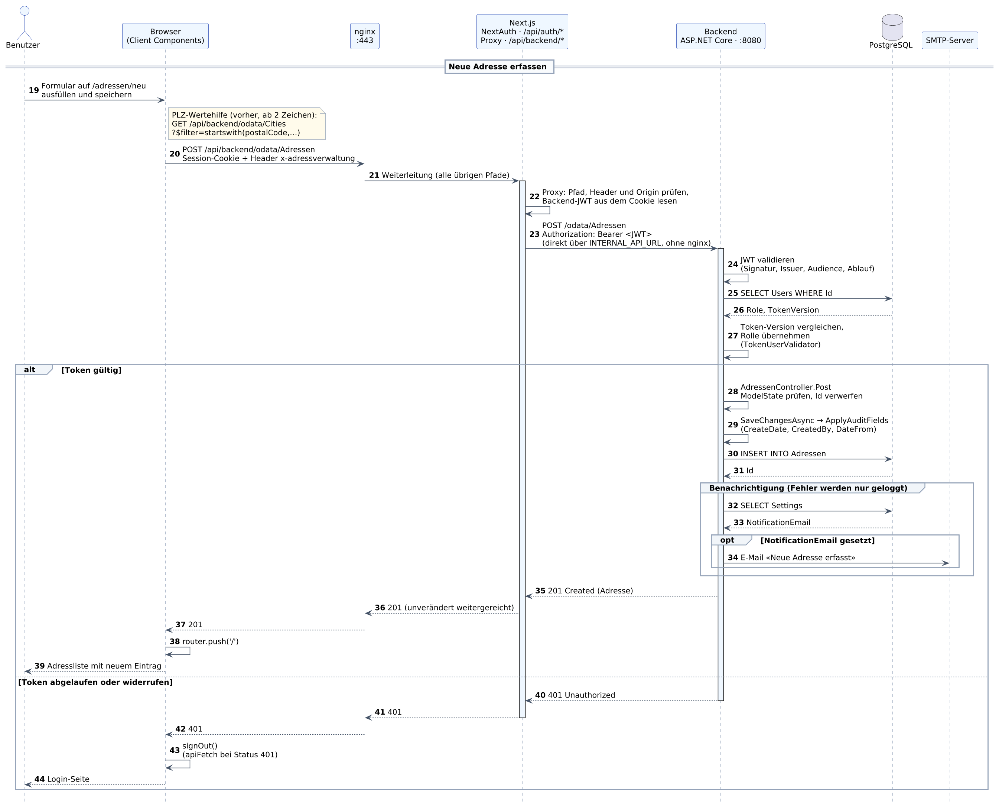

Diese Unterlage erklärt jeden der 44 nummerierten Schritte im Sequenzdiagramm der Adressverwaltung (documentation/Sequenzdiagramm.svg). Das Diagramm zeigt zwei Abläufe: die Anmeldung (Schritte 1 bis 18) und das Erfassen einer neuen Adresse (Schritte 19 bis 44).
Nach dem Durcharbeiten können Sie erklären, welchen Weg eine Anfrage vom Browser bis in die Datenbank nimmt, welche Rolle die beiden Tokens spielen und an welcher Stelle im Code jeder Schritt umgesetzt ist.
Zu jedem Schritt finden Sie drei Angaben: Was passiert beschreibt den Vorgang, Im Code nennt die Datei und die Stelle, Warum so begründet die Lösung oder weist auf eine Stolperfalle hin. Pfade im Frontend beziehen sich auf frontend/, Pfade im Backend auf backend/AdressverwaltungApi/.
Diese Fassung ersetzt die vom 4. Oktober 2026 (38 Schritte). Seither geändert: Der Browser ruft die API über einen Proxy auf und kennt das Backend-Token nicht mehr; dazu kommen Kontosperre, Rollen und der Widerruf von Tokens.
Jede senkrechte Linie steht für einen Beteiligten, die Zeit läuft von oben nach unten. Ein durchgezogener Pfeil ist eine Anfrage, ein gestrichelter Pfeil eine Antwort. Ein Pfeil, der zum selben Beteiligten zurückführt, ist ein interner Arbeitsschritt. Ein Rahmen mit «alt» enthält zwei Alternativen, von denen genau eine abläuft; ein Rahmen mit «opt» läuft nur unter der genannten Bedingung ab.
| Beteiligter | Aufgabe | Im Projekt |
|---|---|---|
| Benutzer | Die Person vor dem Bildschirm. | – |
| Browser (Client Components) | Führt den React-Code der Seiten aus, zeigt Formulare an und sendet Anfragen. | frontend/app, frontend/components, frontend/lib/api.ts |
| nginx :443 | Einziger Zugang von aussen. Beendet TLS und verteilt Anfragen nach Pfad an Next.js oder das Backend. | nginx/nginx.conf |
| Next.js / NextAuth | Liefert die Seiten aus, verwaltet die Sitzung des Frontends unter /api/auth/* und reicht API-Aufrufe des Browsers unter /api/backend/* an das Backend weiter. | frontend/lib/auth.ts, frontend/middleware.ts, frontend/app/api/backend |
| Backend (ASP.NET Core :8080) | Die API: prüft Anmeldedaten, stellt Tokens aus, speichert und liefert Daten über OData. | backend/AdressverwaltungApi |
| PostgreSQL | Speichert Benutzer, Adressen, Städte und Einstellungen. | Tabellen Users, Adressen, Cities, Settings |
| SMTP-Server | Externer Mailserver für die Benachrichtigung bei neuen Adressen. | Konfiguration SmtpSettings |
Ein Eingang, und der Browser spricht nur mit Next.js. Der Browser kennt ausschliesslich die Adresse https://localhost, hinter der nginx steht. Alles, was die Anwendung im Browser aufruft – Seiten, Anmeldung und API – leitet nginx an Next.js. Das Backend erreicht sie nur über Next.js. Backend und Datenbank sind von aussen nicht direkt erreichbar; die nginx-Pfade /odata/*, /auth/* und /settings bleiben für Werkzeuge mit eigenem Token.
Zwei Tokens, eines davon bleibt auf dem Server. Das Backend stellt beim Login ein JWT aus. NextAuth verpackt dieses JWT in seine eigene, verschlüsselte Sitzung und legt sie als Cookie im Browser ab. Der Browser kann das Cookie nur mitsenden, nicht lesen. Bei jedem API-Aufruf packt Next.js das Backend-JWT auf dem Server aus und sendet es im Authorization-Header an das Backend. Beide gelten 8 Stunden; eine Abmeldung macht das Backend-JWT sofort ungültig.
Die Schritte 1 bis 8 laufen immer ab, sofern die E-Mail-Adresse nicht gesperrt ist (Schritt 5). Danach verzweigt der Ablauf: Bei gültigen Anmeldedaten folgen die Schritte 9 bis 14, bei ungültigen die Schritte 15 bis 18.

Beteiligte: Benutzer → Browser
Was passiert: Die Benutzerin öffnet die Anwendung. Weil sie noch keine Sitzung hat, leitet der Seitenschutz sie auf die Login-Seite um. Dort gibt sie E-Mail-Adresse und Passwort ein und klickt auf «Anmelden». Bis hierhin verlässt nichts den Browser: Die Eingaben stehen nur im Zustand der React-Komponente.
Im Code: Der Seitenschutz ist frontend/middleware.ts: Jede Seite ausser /login und /api/auth verlangt eine Sitzung mit Backend-Token; sonst leitet er auf /login um und merkt sich die gewünschte Seite in callbackUrl. Das Formular ist app/login/LoginForm.tsx; die Felder sind Controlled Inputs (useState).
Warum so: Das Formular ist eine Client-Komponente, weil es auf Eingaben reagieren muss. Die umgebende Seite app/login/page.tsx bleibt eine Server-Komponente und entscheidet dort, ob die Google-Schaltfläche angezeigt wird.
Beteiligte: Browser → nginx
Was passiert: Beim Absenden ruft das Formular die NextAuth-Funktion signIn('credentials') auf. Sie holt zuerst ein CSRF-Token und sendet dann E-Mail und Passwort per POST an den NextAuth-Endpunkt. Die Verbindung ist mit TLS verschlüsselt und endet bei nginx auf Port 443.
Im Code: app/login/LoginForm.tsx, Funktion handleCredentials: signIn('credentials', { email, password, redirect: false, callbackUrl }). redirect: false bewirkt, dass NextAuth nicht selbst weiterleitet, sondern das Ergebnis an das Formular zurückgibt.
Warum so: Das Passwort geht nie direkt vom Browser an das Backend, sondern immer über NextAuth. nginx begrenzt diesen Pfad auf 10 Anfragen pro Minute und Client-IP; wer mehr sendet, erhält die Antwort 429. Das bremst das Durchprobieren von Passwörtern.
Beteiligte: nginx → Next.js
Was passiert: nginx entscheidet anhand des Pfads, wohin eine Anfrage gehört. /odata/, /auth/ und /settings gehen an das Backend, alles andere an Next.js. /api/auth/callback/credentials fällt unter «alles andere» und landet beim Next.js-Server auf Port 3000.
Im Code: nginx/nginx.conf: der Block location /api/auth/callback/credentials (mit Ratenbegrenzung) und der allgemeine Block location /.
Warum so: Achtung Verwechslungsgefahr: /api/auth gehört zu NextAuth im Frontend, /auth/ zum Backend. Deshalb heisst die Login-Seite /login und die Einstellungsseite /einstellungen – Seiten dürfen nicht mit den Backend-Präfixen kollidieren.
Beteiligte: Next.js → Backend
Was passiert: NextAuth ruft für den Credentials-Provider die Funktion authorize() auf. Diese läuft auf dem Next.js-Server und sendet E-Mail und Passwort als JSON an den Login-Endpunkt des Backends. Der Aufruf geht direkt über das Docker-Netzwerk an http://backend:8080, nicht über nginx.
Im Code: frontend/lib/auth.ts, authorize() im CredentialsProvider. Die Adresse stammt aus INTERNAL_API_URL. Im Backend nimmt AuthController.Login die Anfrage entgegen; der Body wird auf LoginRequest abgebildet und geprüft (E-Mail-Format, Längen).
Warum so: Server-seitige Aufrufe brauchen kein TLS und keinen Umweg über nginx, weil beide Container im selben internen Netz liegen. Das Backend ist von aussen nur über nginx erreichbar.
Beteiligte: Backend (interner Schritt)
Was passiert: Bevor das Backend überhaupt in die Datenbank schaut, prüft es, ob für diese E-Mail-Adresse zu viele Fehlversuche vorliegen. Nach 3 Fehlversuchen innerhalb von 5 Minuten ist die Adresse für 5 Minuten gesperrt. Dann antwortet das Backend sofort mit Status 429, und der Ablauf geht wie ab Schritt 17 weiter: Das Formular zeigt eine Fehlermeldung.
Im Code: Controllers/AuthController.cs: _throttle.IsBlocked(req.Email). Die Schnittstelle ist Services/ILoginThrottle.cs, die Umsetzung MemoryLoginThrottle zählt im Arbeitsspeicher.
Warum so: Die Begrenzung in nginx (Schritt 2) gilt pro Client-IP. Wer von vielen Adressen aus rät, wird erst durch diese Sperre pro Konto gebremst. Gezählt wird auch für unbekannte E-Mail-Adressen – die Sperre verrät also nicht, welche Konten es gibt.
Beteiligte: Backend → PostgreSQL
Was passiert: Das Backend sucht den Benutzer anhand der E-Mail-Adresse. Die Suche ignoriert Gross- und Kleinschreibung, indem beide Seiten in Grossbuchstaben verglichen werden.
Im Code: Controllers/AuthController.cs, Methode FindUserByEmailAsync. Entity Framework Core übersetzt den LINQ-Ausdruck in ein parametrisiertes SQL-SELECT auf die Tabelle Users.
Warum so: Die E-Mail wird nie in den SQL-Text eingesetzt, sondern als Parameter übergeben. SQL-Injection ist damit an dieser Stelle ausgeschlossen.
Beteiligte: PostgreSQL → Backend
Was passiert: Die Datenbank liefert den Datensatz des Benutzers zurück – oder nichts, wenn die E-Mail unbekannt ist. Im Datensatz steht nicht das Passwort, sondern nur dessen Hash.
Im Code: Modell Models/User.cs mit den Feldern Email, PasswordHash, DisplayName, Role, TokenVersion. Der Hash enthält Version, Verfahren, Anzahl Iterationen und Salt, sodass er sich später wieder prüfen lässt. Role ist Admin oder User; TokenVersion wird in Schritt 9 gebraucht.
Warum so: Ein Hash lässt sich nicht zurückrechnen. Selbst wer die Datenbank liest, kennt die Passwörter nicht.
Beteiligte: Backend (interner Schritt)
Was passiert: Das Backend berechnet aus dem eingegebenen Passwort und dem gespeicherten Salt erneut den Hash und vergleicht ihn mit dem gespeicherten Wert. PBKDF2 wiederholt die Berechnung viele tausend Mal und ist dadurch absichtlich langsam.
Im Code: Controllers/AuthController.cs: VerifyHashedPassword aus IPasswordHasher<User>. Ist der Benutzer unbekannt, wird gegen einen festen Ersatz-Hash (DummyHash) geprüft.
Warum so: Die Prüfung läuft auch bei unbekannter E-Mail. So dauert die Antwort in beiden Fällen gleich lange, und ein Angreifer kann aus der Antwortzeit nicht ablesen, welche E-Mail-Adressen registriert sind.
Beteiligte: Backend (interner Schritt)
Was passiert: Stimmen E-Mail und Passwort, löscht das Backend den Fehlerzähler aus Schritt 5 und stellt ein JSON Web Token aus. Es enthält die Benutzer-Id (sub), E-Mail, Anzeigenamen, eine eindeutige Token-Id, die Token-Version des Benutzers (tv) und das Ablaufdatum in 8 Stunden. Das Token wird mit einem geheimen Schlüssel signiert.
Im Code: Controllers/AuthController.cs: _throttle.Reset. Services/JwtTokenService.cs, Methode CreateToken. Schlüssel, Aussteller, Empfänger und Laufzeit kommen aus JwtOptions (Abschnitt Jwt der Konfiguration, im Docker-Stack aus .env).
Warum so: Das Token ist signiert, nicht verschlüsselt: Jeder kann den Inhalt lesen, aber niemand kann ihn ohne den Schlüssel verändern. Die Rolle steht bewusst nicht im Token – sie wird bei jeder Anfrage frisch aus der Datenbank gelesen (Schritt 27). Über die Token-Version lässt sich ein ausgestelltes Token später widerrufen.
Beteiligte: Backend → Next.js
Was passiert: Das Backend antwortet mit Status 200 und einem JSON-Objekt, das die Benutzerdaten, die Rolle und das eben ausgestellte Token enthält.
Im Code: LoginResponse in Dtos/AuthDtos.cs. Der Passwort-Hash ist bewusst kein Teil dieses Typs.
Warum so: Das Format { id, name, email } ist das, was NextAuth von authorize() erwartet. Das Feld token transportiert das Backend-JWT, role braucht das Frontend nur für die Anzeige (zum Beispiel um das Einstellungsformular zu sperren).
Beteiligte: Next.js (interner Schritt)
Was passiert: NextAuth baut nun seine eigene Sitzung. Im jwt-Callback übernimmt das Frontend die Benutzer-Id, die Rolle und das Backend-JWT in das NextAuth-Token.
Im Code: frontend/lib/auth.ts, callbacks.jwt: Beim Login ist user gesetzt, also werden token.id, token.role und token.accessToken geschrieben. Die Typen dafür stehen in types/next-auth.d.ts.
Warum so: Hier treffen sich die zwei Token-Schichten: Das NextAuth-Token ist die Sitzung des Frontends, das Backend-JWT darin ist der Ausweis gegenüber der API.
Beteiligte: Next.js → nginx
Was passiert: NextAuth verschlüsselt sein Token mit NEXTAUTH_SECRET und schickt es als Cookie zurück. Das Cookie ist HttpOnly, also für JavaScript im Browser nicht lesbar, und gilt 8 Stunden.
Im Code: frontend/lib/auth.ts: session: { strategy: 'jwt', maxAge: 8 * 60 * 60 }. Die Verschlüsselung übernimmt NextAuth selbst.
Warum so: Sitzungsdauer im Frontend und Laufzeit des Backend-JWT betragen beide 8 Stunden und müssen gemeinsam geändert werden. Weil das Cookie HttpOnly und verschlüsselt ist, kommt JavaScript im Browser nie an das Backend-JWT heran – auch nicht über /api/auth/session: Der session-Callback gibt dort nur Id, Name, E-Mail und Rolle heraus.
Beteiligte: nginx → Browser
Was passiert: nginx reicht die Antwort samt Cookie an den Browser weiter. Der Browser speichert das Cookie und sendet es von nun an bei jeder Anfrage an dieselbe Adresse automatisch mit.
Im Code: nginx/nginx.conf ergänzt Sicherheits-Header wie Strict-Transport-Security. Die Content-Security-Policy der Seiten setzt frontend/middleware.ts mit einer Nonce pro Antwort.
Warum so: Weil alles über dieselbe Adresse (https://localhost) läuft, braucht es keine CORS-Freigaben für den Browser.
Beteiligte: Browser (interner Schritt)
Was passiert: Das Formular erhält das Ergebnis von signIn('credentials') ohne Fehler und navigiert zur Zielseite – normalerweise zur Adressliste, oder zu der Seite, die ursprünglich aufgerufen wurde.
Im Code: app/login/LoginForm.tsx: router.push(callbackUrl) und router.refresh(). sichereCallbackUrl() lässt nur Pfade innerhalb der eigenen App zu.
Warum so: Ohne diese Prüfung könnte ein präparierter Link nach der Anmeldung auf eine fremde Seite weiterleiten (Open Redirect).
Beteiligte: Backend (interner Schritt)
Was passiert: Ist die E-Mail unbekannt oder das Passwort falsch, erhöht das Backend den Fehlerzähler für diese E-Mail-Adresse. Erreicht er 5, greift beim nächsten Versuch die Sperre aus Schritt 5.
Im Code: Controllers/AuthController.cs: _throttle.RegisterFailure(req.Email).
Warum so: Zähler und Sperre laufen nach 5 Minuten von selbst ab; ein Admin kann die Sperre in der Benutzerverwaltung vorzeitig aufheben. Beides liegt im Arbeitsspeicher und geht bei einem Neustart des Backends verloren. Für eine einzelne Instanz genügt das.
Beteiligte: Backend → Next.js
Was passiert: Das Backend antwortet mit Status 401 und einer bewusst allgemeinen Meldung. Es wird kein Token ausgestellt.
Im Code: Controllers/AuthController.cs: return Unauthorized(new { message = "Ungültige Anmeldedaten." }).
Warum so: Die Meldung verrät nicht, ob die E-Mail oder das Passwort falsch war. Das erschwert das Ausspähen gültiger Konten.
Beteiligte: Next.js → nginx
Was passiert: authorize() sieht, dass die Antwort nicht erfolgreich war, und gibt null zurück. Für NextAuth heisst das: Anmeldung abgelehnt. Es wird kein Sitzungs-Cookie gesetzt.
Im Code: frontend/lib/auth.ts: if (!response.ok) return null. Auch Netzwerk- und Parse-Fehler führen über den catch-Zweig zu null.
Warum so: Im Zweifel wird die Anmeldung verweigert. Ein nicht erreichbares Backend führt nie zu einer gültigen Sitzung.
Beteiligte: nginx → Browser
Was passiert: Der Browser erhält das Ergebnis mit gesetztem Fehler. Das Formular bleibt auf der Login-Seite und zeigt «Ungültige E-Mail-Adresse oder falsches Passwort.» an.
Im Code: app/login/LoginForm.tsx: result?.error setzt den Zustand fehler; die Komponente Fehlermeldung zeigt ihn an.
Warum so: Die Meldung erscheint im Formular statt in einem Browser-Dialog. So bleibt die Eingabe erhalten und die Benutzerin kann es direkt erneut versuchen.
Die Schritte 19 bis 27 laufen immer ab. Ist das Token gültig, folgen die Schritte 28 bis 39; ist es abgelaufen oder widerrufen, die Schritte 40 bis 44.

Beteiligte: Benutzer → Browser
Was passiert: Die angemeldete Benutzerin öffnet «+ Neue Adresse», füllt Vorname, Name, Strasse, Nummer, PLZ und Ort aus und klickt auf «Adresse speichern». Schon beim Tippen der PLZ hilft die Wertehilfe (gelbe Notiz im Diagramm): Ab zwei Zeichen fragt der Browser passende Städte ab und bietet sie zur Auswahl an; die Auswahl füllt PLZ und Ort.
Im Code: app/adressen/neu/page.tsx mit components/AdresseForm.tsx. Wertehilfe: sucheStaedteNachPlz in frontend/lib/api.ts, nach 300 ms Eingabepause, höchstens 10 Treffer ($filter=startswith(postalCode,'80')&$top=10). Auch dieser Abruf läuft über den Proxy /api/backend (Schritte 20 bis 27).
Warum so: Die Verzögerung (Debounce) verhindert, dass bei jedem Tastendruck eine Anfrage ausgelöst wird. Die Wertehilfe ist eine Hilfe, keine Pflicht: PLZ und Ort lassen sich auch frei eingeben.
Beteiligte: Browser → nginx
Was passiert: Der Browser sendet die Adresse als JSON – aber nicht an das Backend, sondern an den Proxy der eigenen Anwendung unter /api/backend. Ein Token schickt er nicht mit, denn er hat keines. Stattdessen geht automatisch das Sitzungs-Cookie mit, dazu der eigene Header x-adressverwaltung.
Im Code: frontend/lib/api.ts: erstelleAdresse → apiRequest → apiFetch. Im Browser ist die Basis-URL /api/backend; apiFetch setzt den Header aus lib/apiHeader.ts. Gesendet wird ein AdresseCreate: die sechs Fachfelder in camelCase, ohne Id und ohne Audit-Felder.
Warum so: Früher holte sich der Browser das Backend-JWT aus der Sitzung und sprach direkt mit der API. Eine XSS-Lücke hätte das Token auslesen können. Jetzt bleibt das Token auf dem Server; der Browser besitzt nur das Cookie, das JavaScript nicht lesen kann.
Beteiligte: nginx → Next.js
Was passiert: Der Pfad /api/backend/… beginnt nicht mit einem Backend-Präfix. nginx leitet die Anfrage deshalb an Next.js weiter.
Im Code: nginx/nginx.conf, Block location /.
Warum so: Gleiche Regel wie in Schritt 3. Die Blöcke /odata/ und /settings gibt es in nginx weiterhin – sie sind für Werkzeuge wie Postman gedacht, die ein eigenes Token mitbringen. Die Anwendung im Browser nutzt sie nicht mehr.
Beteiligte: Next.js (interner Schritt)
Was passiert: Der Proxy prüft drei Dinge. Erstens den Pfad: Erlaubt sind nur die Bereiche odata und settings. Zweitens die Herkunft: Der Header x-adressverwaltung muss vorhanden sein, und ein mitgeschickter Origin muss zur eigenen Adresse passen. Drittens die Sitzung: Er entschlüsselt das Cookie mit NEXTAUTH_SECRET und entnimmt ihm das Backend-JWT. Fehlt die Sitzung, antwortet er selbst mit 401, ohne das Backend zu fragen.
Im Code: frontend/app/api/backend/[...pfad]/route.ts: ERLAUBTE_BEREICHE, die Prüfung von API_HEADER und origin, danach getToken({ req }) aus next-auth/jwt.
Warum so: Weil der Aufruf über ein Cookie angemeldet ist, könnte ihn sonst auch eine fremde Website im Browser der Benutzerin auslösen (Cross-Site-Request-Forgery). Einen eigenen Header kann eine fremde Seite aber nicht setzen: Der Browser verlangt dafür eine CORS-Freigabe, und die gibt es nicht.
Beteiligte: Next.js → Backend
Was passiert: Der Proxy sendet die Anfrage an das Backend weiter: gleiche Methode, gleicher Body, gleiche Abfrageparameter. Neu hinzu kommt der Header Authorization: Bearer <JWT>. Der Aufruf geht direkt über das Docker-Netzwerk an http://backend:8080.
Im Code: frontend/app/api/backend/[...pfad]/route.ts: fetch(`${INTERNAL_API}/${pfad.join('/')}…`) mit dem Token aus Schritt 22.
Warum so: Derselbe interne Weg wie beim Login (Schritt 4). Server-Komponenten wie die Städteliste brauchen den Proxy nicht: Sie laufen bereits auf dem Server und rufen das Backend direkt auf (getServerSession(serverAuthOptions) in lib/api.ts).
Beteiligte: Backend (interner Schritt)
Was passiert: Bevor ein Controller läuft, prüft die Authentifizierungs-Middleware das Token: Stimmt die Signatur mit dem geheimen Schlüssel? Stimmen Aussteller und Empfänger? Ist das Token noch nicht abgelaufen? Aus einem gültigen Token entsteht die Identität des Aufrufers; der Claim name wird zum Benutzernamen.
Im Code: Program.cs: AddJwtBearer mit TokenValidationParameters (zugelassen ist nur HS256), danach UseAuthentication() und UseAuthorization(). Eine Fallback-Policy verlangt die Anmeldung für jeden Endpunkt ausser POST /auth/login.
Warum so: Diese Prüfung braucht keine Datenbank: Das Backend erkennt an der Signatur, dass es das Token selbst ausgestellt hat. Sie allein sagt aber nicht, ob das Token inzwischen widerrufen wurde – dafür folgen die Schritte 25 bis 27.
Beteiligte: Backend → PostgreSQL
Was passiert: Das Backend liest zum Benutzer aus dem Token (Claim sub) die aktuelle Rolle und die aktuelle Token-Version aus der Datenbank.
Im Code: TokenUserValidator.cs, Methode ValidateAsync; eingehängt in Program.cs als JwtBearerEvents.OnTokenValidated.
Warum so: Das kostet eine kleine Abfrage pro Anfrage. Dafür wirken Abmeldung, Löschung und Rollenwechsel sofort und nicht erst, wenn das Token nach bis zu 8 Stunden abläuft.
Beteiligte: PostgreSQL → Backend
Was passiert: Die Datenbank liefert Rolle und Token-Version – oder nichts, wenn es den Benutzer nicht mehr gibt.
Im Code: Die Abfrage wählt nur diese zwei Spalten (Select(u => new { u.Role, u.TokenVersion })) und verfolgt das Ergebnis nicht (AsNoTracking).
Warum so: Der Passwort-Hash wird hier nicht gebraucht und deshalb gar nicht erst geladen.
Beteiligte: Backend (interner Schritt)
Was passiert: Das Backend vergleicht die Version im Token (tv) mit der Version in der Datenbank. Stimmen sie überein, gilt das Token, und die Rolle aus der Datenbank wird zur Identität des Aufrufers hinzugefügt. Stimmen sie nicht überein oder fehlt der Benutzer, wird das Token abgewiesen.
Im Code: TokenUserValidator.cs: context.Fail(…) bzw. AddClaim(new Claim(ClaimTypes.Role, user.Role)). Die Version erhöhen POST /auth/logout (AuthController.Logout) und scripts/reset_password.sh.
Warum so: So funktioniert der Widerruf: Bei der Abmeldung ruft NextAuth das Backend auf, dieses erhöht die Token-Version, und alle früher ausgestellten Tokens des Benutzers passen nicht mehr. Die Rolle entscheidet, was erlaubt ist: Adressen erfassen dürfen Admin und User, Einstellungen ändern und Benutzer anlegen nur Admin.
Beteiligte: Backend (interner Schritt)
Was passiert: OData bildet den JSON-Body auf ein Adresse-Objekt ab und ruft die Post-Methode auf. Diese prüft zuerst, ob die Daten gültig sind: Alle sechs Felder sind Pflicht und haben eine Höchstlänge. Bei Verstössen antwortet das Backend mit 400 und nennt die betroffenen Felder. Eine mitgeschickte Id wird verworfen.
Im Code: Post ist in der Basisklasse ODataCrudController<TEntity> implementiert; AdressenController erbt sie. Die Regeln stehen als [Required] und [MaxLength] am Modell Models/Adresse.cs.
Warum so: Der Browser prüft die Pflichtfelder zwar auch, aber nur das Backend ist verbindlich: Eine Anfrage kann jederzeit am Formular vorbei gesendet werden. Aus demselben Grund vergibt allein die Datenbank die Id.
Beteiligte: Backend (interner Schritt)
Was passiert: Vor dem Speichern füllt der Datenbankkontext die Audit-Felder: CreateDate mit dem aktuellen Zeitpunkt, CreatedBy mit dem Namen aus dem Token und DateFrom mit dem heutigen Datum, falls nichts übergeben wurde.
Im Code: Data/AdresseDbContext.cs: SaveChangesAsync ruft ApplyAuditFields auf. Der Benutzername kommt aus HttpContext.User.Identity.Name; ohne angemeldeten Benutzer (zum Beispiel beim Seeding) steht dort "system".
Warum so: Die Felder werden an einer zentralen Stelle gesetzt und gelten für alle Entitäten. Controller setzen sie nie selbst, und Werte aus dem Request werden überschrieben oder geleert – so lassen sie sich nicht fälschen.
Beteiligte: Backend → PostgreSQL
Was passiert: Entity Framework Core erzeugt aus dem Objekt ein parametrisiertes INSERT und sendet es an PostgreSQL.
Im Code: Data/AdresseDbContext.cs: DbSet<Adresse> Adressen; Tabelle Adressen. Zeitstempel werden als timestamp without time zone gespeichert. Das Backend verbindet sich mit der Datenbankrolle adressverwaltung_app, nicht als Superuser.
Warum so: Deshalb setzt ApplyAuditFields die Zeit mit DateTimeKind.Unspecified: Npgsql lehnt UTC-Zeitwerte für diesen Spaltentyp ab.
Beteiligte: PostgreSQL → Backend
Was passiert: Die Datenbank vergibt die neue Id und gibt sie zurück. Entity Framework Core trägt sie in das Objekt ein. Damit ist die Adresse dauerhaft gespeichert.
Im Code: Die Id ist eine automatisch hochgezählte Spalte; der Client übergibt sie nicht.
Warum so: Alles, was jetzt noch folgt, kann das Speichern nicht mehr rückgängig machen – wichtig für die Benachrichtigung im nächsten Block.
Beteiligte: Backend → PostgreSQL
Was passiert: Nach dem Speichern löst der Controller die Benachrichtigung aus. Der Dienst liest zuerst die Einstellungen, um die Empfängeradresse zu erfahren.
Im Code: AdressenController: OnCreatedAsync ruft INotificationService auf; Implementierung EmailNotificationService, Methode NotifyNewAdresseAsync.
Warum so: Der Controller kennt nur die Schnittstelle. Ob per E-Mail, SMS oder Webhook benachrichtigt wird, lässt sich ändern, ohne den Controller anzufassen.
Beteiligte: PostgreSQL → Backend
Was passiert: Die Einstellungen bestehen aus einer einzigen Zeile mit der Benachrichtigungs-E-Mail und der Farbe der Oberfläche. Sie wird auf der Seite «Einstellungen» gepflegt.
Im Code: Modell Models/Settings.cs; gepflegt über SettingsController (GET/PUT /settings).
Warum so: Gibt es keine Zeile oder ist die Adresse leer, schreibt der Dienst nur einen Log-Eintrag und endet. Schritt 34 entfällt dann (Rahmen «opt» im Diagramm).
Beteiligte: Backend → SMTP-Server
Was passiert: Ist eine Adresse hinterlegt, sendet das Backend eine Text-E-Mail mit Name, Strasse und Ort der neuen Adresse an den SMTP-Server.
Im Code: Services/EmailService.cs, Methode SendAsync; Zugangsdaten aus SmtpOptions (Abschnitt SmtpSettings).
Warum so: Der ganze Block steht in einem try/catch: Schlägt der Versand fehl, wird der Fehler geloggt, aber die Anfrage läuft normal weiter. Ein gestörter Mailserver darf das Erfassen von Adressen nicht verhindern.
Beteiligte: Backend → Next.js
Was passiert: Das Backend antwortet mit Status 201 und der gespeicherten Adresse als JSON – jetzt mit Id und Audit-Feldern.
Im Code: ODataCrudController<TEntity>: return Created(entity).
Warum so: 201 bedeutet «neu angelegt» und ist genauer als ein allgemeines 200.
Beteiligte: Next.js → nginx
Was passiert: Der Proxy gibt Status und Inhalt der Backend-Antwort unverändert zurück. Er ergänzt nur Cache-Control: no-store, damit weder Browser noch Zwischenspeicher die Daten aufbewahren.
Im Code: frontend/app/api/backend/[...pfad]/route.ts: new NextResponse(await antwort.text(), { status: antwort.status, … }).
Warum so: Der Proxy kennt die Fachlogik nicht. Er prüft, hängt das Token an und reicht durch – so bleibt das Backend die einzige Stelle, die über Daten und Rechte entscheidet.
Beteiligte: nginx → Browser
Was passiert: nginx reicht die Antwort an den Browser weiter.
Im Code: frontend/lib/api.ts: apiRequest prüft response.ok; erstelleAdresse wandelt die Antwort mit normalizeAdresse in den Typ Adresse um.
Warum so: Die normalize*-Funktionen sorgen dafür, dass der Rest des Frontends mit einem festen Typ arbeitet, unabhängig von Details der API-Antwort.
Beteiligte: Browser (interner Schritt)
Was passiert: Die Seite navigiert zurück zur Adressliste.
Im Code: app/adressen/neu/page.tsx: handleSubmit mit router.push('/').
Warum so: Die Navigation geschieht erst nach erfolgreichem Speichern. Bei einem Fehler bleibt das Formular mit den Eingaben stehen.
Beteiligte: Browser → Benutzer
Was passiert: Die Adressliste lädt die erste Seite der Adressen neu und zeigt den neuen Eintrag. Dieser Abruf läuft wieder nach dem Muster der Schritte 20 bis 27: GET /api/backend/odata/Adressen mit Cookie, der Proxy hängt das Token an.
Im Code: app/page.tsx: ladeDaten ruft getAdressenSeite(seite) auf (25 Zeilen pro Seite, $top, $skip, $count=true).
Warum so: Die Liste wird vom Backend geholt und nicht lokal ergänzt. So zeigt sie immer den gespeicherten Stand.
Beteiligte: Backend → Next.js
Was passiert: Ist das Token abgelaufen, die Signatur ungültig oder die Token-Version veraltet, bricht das Backend die Anfrage ab. Der Controller wird nicht aufgerufen, es wird nichts gespeichert.
Im Code: [Authorize] zusammen mit der JwtBearer-Middleware in Program.cs und TokenUserValidator.cs.
Warum so: Typische Auslöser: Die Benutzerin hat sich auf einem anderen Gerät abgemeldet, ihr Passwort wurde zurückgesetzt, oder der Signaturschlüssel wurde seit der Anmeldung geändert.
Beteiligte: Next.js → nginx
Was passiert: Der Proxy reicht auch Fehlerantworten unverändert durch.
Im Code: frontend/app/api/backend/[...pfad]/route.ts, dieselbe Stelle wie in Schritt 36.
Warum so: Der Browser soll den echten Status sehen, um darauf reagieren zu können (Schritt 43).
Beteiligte: nginx → Browser
Was passiert: nginx gibt die Antwort unverändert weiter.
Im Code: –
Warum so: nginx bewertet Statuscodes des Backends nicht; es leitet nur weiter.
Beteiligte: Browser (interner Schritt)
Was passiert: apiFetch erkennt den Status 401 und meldet die Benutzerin ab: NextAuth löscht das Sitzungs-Cookie und leitet auf die Login-Seite um.
Im Code: frontend/lib/api.ts: if (IM_BROWSER && response.status === 401) await signOut({ callbackUrl: '/login' }).
Warum so: Eine Sitzung, deren Backend-Token nicht mehr gilt, ist nutzlos: Jeder weitere Aufruf würde ebenfalls scheitern. Statt einer Fehlermeldung, bei der erneutes Versuchen nicht hilft, führt die Anwendung direkt zur Lösung.
Beteiligte: Browser → Benutzer
Was passiert: Die Benutzerin sieht die Login-Seite und meldet sich neu an. Die Eingaben im Formular sind verloren.
Im Code: app/login/page.tsx.
Warum so: Der Verlust der Eingaben ist der Preis dieser einfachen Lösung. Er tritt nur ein, wenn die Sitzung während des Ausfüllens ungültig wird.
/api/backend.| Frage | Antwort |
|---|---|
1. Warum sendet der Browser das Passwort nicht direkt an /auth/login des Backends? | Die Anmeldung läuft über NextAuth, damit das Frontend eine eigene Sitzung (verschlüsseltes Cookie) aufbauen kann. Den Aufruf an das Backend macht der Next.js-Server intern (Schritte 2 bis 4). |
| 2. Welche zwei Tokens gibt es, und wer prüft welches? | Das Sitzungs-Token von NextAuth im Cookie prüft Next.js (Schritt 22). Das Backend-JWT im Authorization-Header prüft das Backend (Schritte 24 bis 27). |
| 3. Warum kann JavaScript im Browser das Backend-JWT nicht lesen? | Es steckt nur im verschlüsselten HttpOnly-Cookie. Der Browser ruft die API über den Proxy /api/backend auf, der das Token auf dem Server anhängt (Schritte 12, 20 bis 23). |
| 4. Woher weiss das Backend, wer eine Adresse erfasst hat? | Aus dem Claim name des geprüften Tokens; ApplyAuditFields schreibt ihn nach CreatedBy (Schritte 24 und 29). |
| 5. Was geschieht mit der neuen Adresse, wenn der Mailserver nicht erreichbar ist? | Sie bleibt gespeichert und die Antwort ist 201. Der Fehler wird nur geloggt (Schritte 31 bis 35). |
| 6. Die Benutzerin meldet sich am Laptop ab. Was passiert mit ihrer Sitzung auf dem Tablet? | Die Abmeldung erhöht ihre Token-Version. Das Token auf dem Tablet passt nicht mehr; der nächste Aufruf endet mit 401, und sie landet auf der Login-Seite (Schritte 27, 40 bis 44). |
| 7. Jemand gibt viermal hintereinander ein falsches Passwort für dieselbe E-Mail-Adresse ein. Was passiert beim vierten Mal? | Nach drei Fehlversuchen ist die Adresse 5 Minuten gesperrt. Das Backend antwortet mit 429, ohne das Passwort zu prüfen – auch wenn es jetzt das richtige wäre (Schritte 5 und 15). |
8. Warum verlangt der Proxy den Header x-adressverwaltung? | Als Schutz vor Cross-Site-Request-Forgery: Der Aufruf ist über ein Cookie angemeldet, und nur die eigene Anwendung kann diesen Header setzen (Schritt 22). |
9. Warum braucht eine neue Backend-Route unter /berichte, die der Browser aufrufen soll, keine Änderung in nginx mehr? | Weil der Browser sie über /api/backend/berichte erreicht. Dafür muss berichte in ERLAUBTE_BEREICHE des Proxys stehen. Einen eigenen location-Block in nginx braucht nur, wer die Route direkt mit eigenem Token aufrufen will (Schritte 21 und 22). |
| Begriff | Bedeutung |
|---|---|
| JWT | JSON Web Token: signiertes Datenpaket mit Angaben zum Benutzer und einem Ablaufdatum. |
| Bearer-Token | Token, das im Header Authorization: Bearer … mitgesendet wird. Wer es besitzt, gilt als angemeldet – deshalb bleibt es hier auf dem Server. |
| HS256 | Signaturverfahren mit einem gemeinsamen geheimen Schlüssel (HMAC-SHA256). |
| PBKDF2 | Verfahren, das aus Passwort und Salt in vielen Wiederholungen einen Hash berechnet. |
| Salt | Zufallswert pro Passwort, damit gleiche Passwörter verschiedene Hashes ergeben. |
| NextAuth | Bibliothek für Anmeldung und Sitzungen in Next.js. |
| OData | Standard für REST-Schnittstellen mit einheitlichen Abfrageoptionen wie $filter und $top. |
| Reverse Proxy | Vorgeschalteter Server, der Anfragen entgegennimmt und an interne Dienste verteilt (hier nginx). |
| Proxy (hier) | Route in Next.js, die Aufrufe des Browsers entgegennimmt, das Token anhängt und sie an das Backend weiterreicht. |
| CSRF | Cross-Site-Request-Forgery: Eine fremde Website löst im Browser einer angemeldeten Person unbemerkt Aufrufe aus. |
| Token-Version | Zähler pro Benutzer. Ein Token gilt nur, solange seine Version mit der in der Datenbank übereinstimmt. |
| Rolle | Admin oder User; bestimmt, welche Endpunkte ein Benutzer aufrufen darf. |
| Claim | Einzelne Angabe im Token, zum Beispiel name oder email. |
| Audit-Felder | Felder, die festhalten, wer einen Datensatz wann erstellt und geändert hat. |
| Controlled Input | Formularfeld, dessen Wert im React-Zustand liegt. |